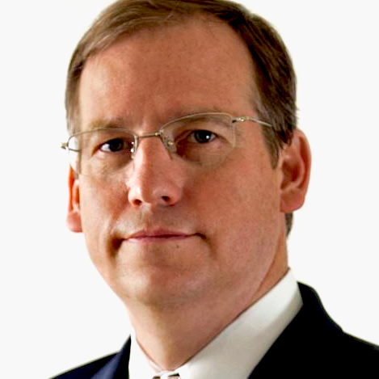
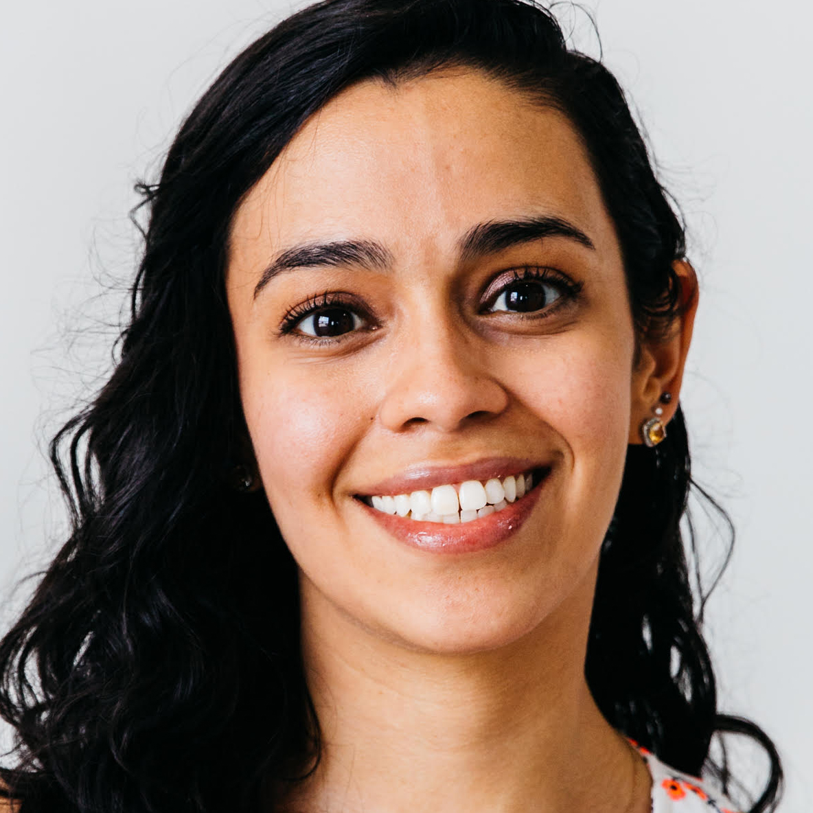

Erik Speakman, Founder
Our founder Erik Speakman has over 20 years experience facilitating planning, implementation and change initiatives. A certified mediator with an MBA in Finance and Strategic Planning from Georgia State University, Erik blends expertise in business basics with an ability to identify and troubleshoot potential conflicts and challenges to implementation. Erik brings a broad experience to designing and facilitating management training and organizational development programs. He has conducted leadership development, planning and partnership workshops at a number of conferences, including the Georgia Center for Non-Profits Summit and Georgia State University. Previously, Erik was a partner of Rechtman Consulting Group.

Nicole Morado, Nonprofit Consultant and Program Manager
Nicole earned her Bachelor of Science in Economics and International Affairs from
Georgia Tech, and served as a Program Manager at the Georgia Center for
Nonprofits from 2013-2017. She has conducted a wide range of academic and professional research using in-depth interviews, focus group facilitation, best practice
research, survey creation and analysis, database mapping, geographic mapping and peer-reviewed article discovery.
Nicole's consulting speciality is nonprofit start-ups and facilitating Strategic Planning, Board Development and
Resource Development for small and emerging nonprofit organizations. Nicole managed the GCN Consulting Affiliate
network and matched prospective clients with consultants. Nicole was a 2016 recipient of Atlanta's Young Nonprofit
Professionals Network "30 Under 30" Award and a participant in the Atlanta Regional Commission's Arts Leaders of
Metro Atlanta's Class of 2018. She serves as Board Chair for local arts nonprofit MINT, and is the Development
Committee Chair for Free Bikes 4 Kids Atlanta, both located at The MET in Southwest Atlanta's Adair Park
neighborhood.